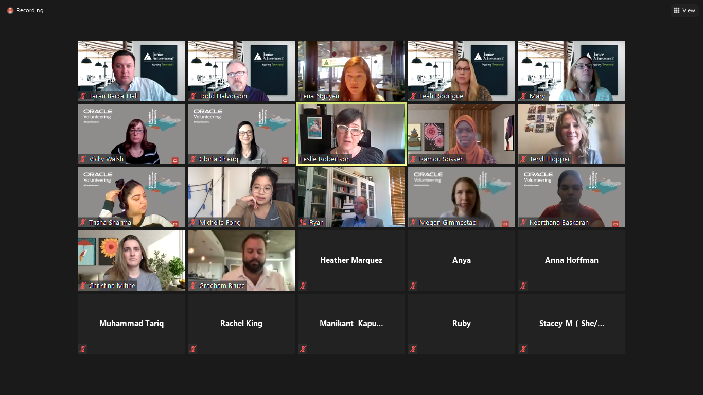

Resume
Open a PDF file for Resume.
Guest Speakers/ Field Trips
2019-2020 (FRESHMAN YEAR)
In my freshman year, the engineering academy exposed me to several opportunities and influential talks. One talk that had a lasting impact on me, was from Aileen Iniguez. She is a data scientist and analytics analyst from Chevron. At Chevron, she uses Python to go through data and clean it to receive accurate, collected data. One major takeaway I gathered from her speech, is that data science is more than working with numbers. In data science, you analyze and interpret data and gather insight. She discovered her interest in data science after college through Techbridge Girls and Project Lead The Way which was a part of her inspirational pathway.
Another guest speaker was John Stewart, the Chief Security and Trust Officer of Cisco. In his interactive talk, he focused on his career in security and the challenges he’s faced in cybersecurity. His pathway was inspirational as well, as he has been working in IT for over two decades and has worked at Cisco twice. Stewart is close with and cares for the people that work for him, which is his favorite part of his position at Cisco.
2020-2021 (SOPHOMORE YEAR)
During my time in the engineering program, I have met various industry professionals through workplace field trips and guest speakers. Through Zoom on February 4th, I joined a webinar with Kenny Lau, a junior at CalPoly SLO. He received $10,000 in seed funding for co-founding Nova, a financial service that uses blockchain technology to make payments across the globe. He talked about his experiences at Dublin High School, including the Engineering Pathway. When he began college, he focused on computer science rather than engineering.
One significant takeaway I grasped from this session is Dublin High School, and the academy offers countless opportunities to discover several engineering disciplines. Similar to Kenny, I intend to study computer science in college and as my career pathway. He emphasizes the importance to explore different opportunities and aspects of the field to gain exposure.
On October 7th, I attended a webinar organized by Junior Achievement. It was a virtual job shadow at Oracle, a multinational computer technology company. I discovered that Oracle specializes in database software for cloud systems. Additionally, I noticed how enormous the company is, as there were employees internationally from the United States to India. It is evident that Oracle values philanthropy among their employees. Workers are encouraged to volunteer and perform charitable contributions, matched by the Oracle Corporation.

2021-2022 (JUNIOR YEAR)
While I joined to solidify my technical skills, DEDA’s rigorous courses ultimately prepared me to use my skills for the betterment of humanity. As a constantly evolving subject, it pushes me to think about how best to solve many challenging problems. I'm interested in becoming a social entrepreneur and creating projects that will have a real-world impact in the future as a result of my experience at the engineering academy and the Junior Achievement Entrepreneurship Summit. This panel consisted of three panelists, Tisha Pelletier, Ben Davis, and Chris Mittelstaedt, who started their own companies and shared their advice on creating and maintaining a successful business. Many of their motivations revolved around freedom and flexibility, for instance, Mr. Davis was upset after not getting the promotion he deserved. As an eight-year-old pumping oil for his grandfather, he developed an entrepreneurial mindset and found ways to earn money without working hard. I found this interesting as I feel like I have a similar mindset at my age. I also took away the implicit skills necessary to succeed as a social entrepreneur, for example, Mr. Mittelstaedt discussed his five core skills for taking advice from clients: respect, responsiveness, realistic assessment, personal responsibility, and remembering to be positive. Overall, I learned a lot from this field trip that will be useful in the future for further these skills, which are crucial for problem-solving and innovation.
Here at Dublin High, we had the honor of listening to NASA's Associate Administrator for Education Donald James. It was inspiring to hear that the 1986 Space Challenger disaster motivated him to pursue a career at NASA. This taught me that I can apply my technical skills to any field, not just to Big Tech companies, and that I am capable of working with cross-disciplinary industries to achieve social good. The most important piece of advice he gave was to emphasize manners over intelligence. It's crucial to be approachable and open since I believe computer scientists are often too engrossed with their technical skills.
Dig Deep Farms at Ardenwood Historic Farms, which strives to increase community involvement through sustainable food agriculture, was my favorite field trip provided by the Engineering Academy. As president of the Environmental Technology and Sustainability Club, I began thinking about how we can implement some of their ideas of sustainable gardening into our Greenspace at Dublin High. My curiosity was piqued by their composting methods, which utilized pumpkins from the previous fall, since I had never considered how many leftover pumpkins and squash are left over after Thanksgiving. By implementing our own composting system in our own Greenspace, our club intends to follow Dig Deep Farms' example.
The Mentorship Program offered us another great field trip with the Lawrence Livermore National Laboratory Tour 2022, where we were able to virtually tour the lab and hear from industry professionals. There were a variety of professionals on the panel, including material engineers Brandon Demory and Becca Walton, as well as researchers Noah Allen and Johanna Swartch. My biggest takeaway from hearing from these professionals was how LLNL has a strong interdisciplinary approach to research, which means engineers work closely with researchers to develop technologies for the benefit of humanity. I have definitely been inspired to pursue cross-disciplinary research opportunities in college to gain new perspectives and methods for addressing social problems.
2022-2023 (SENIOR YEAR)
I am continuing to use the technical skills learned from the courses I took in the Engineering Academy for social good. In November 2022, I was offered an opportunity to be a web developer at the Berkeley-based Human Rights non-profit, East Bay Sanctuary Covenant (EBSC), where I have volunteered since 2019. EBSC recently received a technology grant from the California Access to Justice Commission to support their work in providing legal support to asylum seekers fleeing oppression. Earlier, I helped make the website bilingual. Now I was approached to work on legal case management software to improve case management and securely digitize all intakes and legal case documents. My first project involves some pretty significant work for their "Amplifying Sanctuary Voices" website. This will have a video section devoted to the Mam communities of Oakland and increased accessibility for people with disabilities. They needed someone with deep expertise in HTML, Python, JavaScript, and WordPress development to implement the design and enhance the accessibility tools. I hope to continue using my skills to support resilience in immigrant communities and the betterment of humanity.
Mentorship Program
As a junior, I was fortunate to participate in the Mentorship Program, where my mentor Jyostna Sharma helped prepare me for post-secondary transitions and allowed me to establish a professional relationship with an industry professional. I learned a lot about her career path and various roles at IBM, including Product Manager and Associate Partner - AI & Data. The biggest takeaway I gained from Ms. Sharma was the importance of the resume and how every word should be purposeful with limited space. Creating short- and long-term attainable goals was another helpful piece of advice. For example, I changed my original academic goal of obtaining all A's to reviewing material the night before each class. I adjusted this goal after she stressed setting goals you can control, and I continue to follow her advice even after the program ended. Throughout the program, I heard from numerous guest speakers and participated in countless activities that prepared me for the college admission process and my future career path in the industry.
Internships/ Volunteer Experience
Today there is a crucial problem that many elderly people are unable to obtain immediate help when experiencing a fall. This prompted me to engage in a remote research internship in collaboration with Jayeeta Chowdhury, Program Director at India Health Fund, a Tata Trusts Initiative. After examining various health conditions and risk factors that cause falls, I composed a literature review paper on Using Technology to Address Falls And Risk Factors Impacting The Elderly In India. This led to my conclusion that the majority of fatal falls among the elderly were preventable if they received immediate help.
Additionally, I have been volunteering at East Bay Sanctuary Covenant, a non-profit organization that supplies legal and social services for low-income immigrants and people seeking refuge from persecution and violence. At first, I volunteered at the dinner fundraisers and file management. Soon I received a larger role as I composed notes during intakes and assisted asylum seekers fill out immigration paperwork. Despite COVID-19, I have a significant role as a member of the production team, which organizes these fundraising events. On top of that, I am a part of the Technology and Tool support during all online fundraisers, webinars, and workshops. The leadership of Sister Maureen, Lisa Hoffman, and Lisa Gano has inspired me further with their selfless dedication to restore human rights.
In the summer entering junior year, I was fortunate enough to combine my passions of environmental science and computer science in the Stanford Earth’s internship. I was able to conduct a formal research report with two other interns on creating complex analyses based on paleontological data. Our project was on extinction risk as prior research failed to complete a thorough understanding of how extinction risk changes through time. Through R and the Stanford Earth Body Size dataset, we were able to examine extinction risk in relation to the Paleozoic phyla and various biological and ecological traits. Ultimately, I have grasped so much in this brief period like how body size research can shed light on underlying processes that shape biodiversity patterns. I am so grateful for this opportunity as we presented our findings to the Stanford Faculty and in the winter, we will showcase our results at the American Geophysical Union conference.
The summer entering my senior year, I was fortunate to participate in a research internship with Dr. Pavlos Protopapas at Harvard Institute for Applied Computational Science. Initially. I spent the first few weeks diving into theoretical and mathematical topics in Deep learning and how it can be used in real-world image recognition problems. Although I haven’t explored deep calculus beforehand, I was able to adapt and use the Chain Rule for derivatives in backpropagation to update the weights after gathering the neuron's error when predicting the output. I explored some of the most advanced concepts of Deep Learning and its implementation in Python in the Harvard course of PA ST 810: Introduction to Deep Learning. I learned what it takes to create an image recognition model using Convolutional Neural Networks. It was the first time I was exposed to machine learning and computer vision tools to analyze real-world data. Through tools like Tensorflow and Keras, I was able to build, train, and evaluate the spin and other parameters of black holes that couldn't have been explored years ago. My biggest challenge was loading this dataset as it is composed of over 70,000 black hole images in the M87 galaxy captured by the Event Horizon Telescope. However, with the mentorship of Dr. Protopapas and Varshini Reddy, I was able to create an accurate and precise model with a 0.01 mean squared error. Being exposed to astronomy and exploring the interdisciplinary application of computer science in such topics has been especially exciting. Now, I can apply the deep learning tools learned over these six weeks to my own projects like predicting future fall trends in my CareFall device and even with the data gathered from the sensors in my garden.